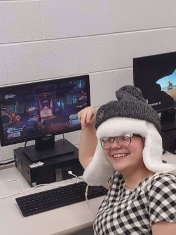

As of right now my major is computer science. I might end up like a fair amount of CompSci majors and end up chanigng my major.
My hobbies are drawing, gaming, and reading mangas.
The advantages of learning about careers in this field will help me to know what is out there. I am taking it because it is a requirement for my major. I hope to be able to better understand html and css so I can to help my brother create a website for his business.
My favourite scripture is John 14:18
A silly little fact about this image: This was when I messed with one of my high school's PCs so it could run Steam games on it.
